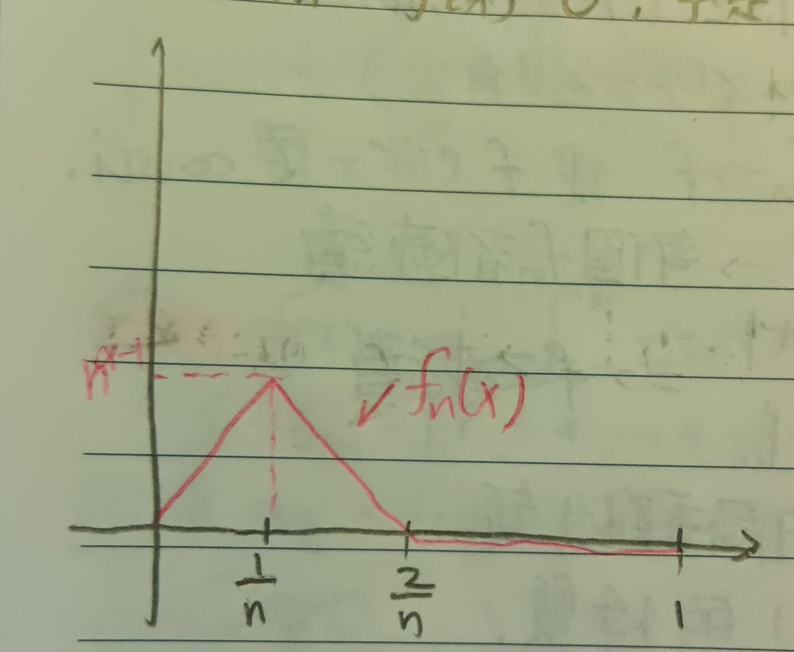

這份筆記是關於函數的數列與級數。
函數數列
定義 1：函數數列的收斂 (Convergence of Sequence of Functions)
給定在定義在\([a,b]\)上的一串函數\(\{f_n(x)\}_{n=1}^\infty\)。我們說\(\{f_n(x)\}\)收斂到一個極限函數\(f(x)\)，若當\(n\to\infty\)時，對所有\(x\in[a,b]\)，有\(f_n(x)\to f(x)\)。也可以寫成在\([a,b]\)上\(f_n\to
f\)。
或者說，給定\(x\in[a,b]\)，若對於所有\(\epsilon>0\)，存在與\(x\), \(\epsilon\)相關的\(N=N(x,\epsilon)\)使得對於所有\(n,m\geq N\)有 \[
|f_n(x)-f_m(x)|<\epsilon
\] 則稱\(\{f_n\}_{n=1}^\infty\)收斂到\(f\)。
註記 1-1
就算每個\(f_n\)都連續，\(f_n\to f\)的\(f\)也不一定連續。
例 1-1-1
在\([0,1]\)上令\(f_n(x)=x^n\)，每個\(f_n\)都連續，但 \[ f_n\to f(x)=\left\{ \begin{aligned} 0&, x\neq 1\\ 1&, x=1 \end{aligned} \right. \] 可見\(f\)不連續。
註記 1-2
可見這種收斂的定義是函數的局部性質，甚至是一個「逐點」(Pointwise) 的性質。
定義 2：一致收斂 (Uniform Convergence)
我們說\(\{f_n(x)\}\)一致收斂到\(f(x)\)，若\(\forall\epsilon>0\), \(\exists N=N(\epsilon)\) (\(N\)和\(x\)無關，只和\(\epsilon\)有關) s.t. \[ |f_n(x)-f_m(x)|<\epsilon\mbox{ when }n\geq N,\forall x \]
例 2-1
在\([0,1]\)上令\(f_n(x)=x^n\)，則\(\{f_n(x)\}\)不會一致收斂。
證明：令\(\epsilon=1/2\)。如果\(f_n\)一致收斂，則\(\forall 0\leq x<1\), \(\exists N=N(\epsilon)\) s.t. 當\(n\geq N\)時， \[ |f_n(x)-f(x)|=|x^n-0|=|x^n|<\frac{1}{2} \] \(\Rightarrow x\)夠靠近\(1\)時就會矛盾。QED
引理 3
若\(\{f_n(x)\}_{n=1}^\infty\)定義在\([a,b]\)上，且每個\(f_n\)都連續，並且\(f_n\)一致收斂到\(f\)，則\(f\)連續。
證明：我們希望說明對於所有\(\epsilon\)，有\(\delta\)使得對所有\(|h|<\delta\)，有\(|f(x+h)-f(x)|<\epsilon\)。由於\(f_n\)一致收斂到\(f\)，故給定\(\epsilon>0\), \(\exists N=N(\epsilon)\) s.t. \[ |f_n(y)-f_m(y)|<\epsilon\mbox{ when },\forall y \] 則 \[ \begin{aligned} |f(x+h)-f(x)|&=|f(x+h)-f_n(x+h)+f_n(x+h)-f_n(x)+f_n(x)-f(x)|\\ &\leq |f(x+h)-f_n(x+h)|+|f_n(x+h)-f_n(x)|+|f_n(x)-f(x)| \end{aligned} \] 由於\(|f(x+h)-f_n(x+h)|\)可以任意小(一致收斂的假設)、\(|f_n(x+h)-f_n(x)|\)可以任意小(\(f_n\)連續)及\(|f_n(x)-f(x)|\)可以任意小(一致收斂的假設)，故\(|f(x+h)-f(x)|\)可以任意小，即\(f\)連續。QED
註記 3-1
就算\(f_n\to f\)不是一致收斂，\(f\)還是能連續。
例 3-1-1
考慮定義在\([0,1]\)上的函數 \[ f_n(x)=\left\{ \begin{aligned} n^\alpha x &,0\leq x\leq\frac{1}{n}\\ \left(\frac{2}{n}-x\right)n^\alpha &,\frac{1}{n}\leq x\leq\frac{2}{n}\\ 0 &,\frac{2}{n}\leq x\leq 1 \end{aligned} \right. \] 函數圖形如下圖1。
顯然\(f_n(x)\to f(x)=0\)，而\(f\)連續。但若\(\alpha-1>0\)，則\(n^{\alpha-1}\)就會越來越大，這種時候\(f_n\)就不會一致收斂(但\(\alpha-1\leq 0\)時還是會一致收斂)。
函數級數
定義 4：函數級數的收斂 (Convergence of Series of Functions)
考慮級數 \[ \sum_{k=1}^\infty g_n(x) \] 我們說它收斂，若序列 \[ f_n(x)=\sum_{k=1}^n g_k(x) \] 收斂。
定義 5：函數級數的一致收斂 (Uniform Convergence of Series of Functions)
考慮級數 \[ \sum_{k=1}^\infty g_n(x) \] 我們說它一致收斂，若序列 \[ f_n(x)=\sum_{k=1}^n g_k(x) \] 一致收斂。
定理 6
若對於所有的\(n\)都有\(|g_n(x)|\leq a_n\)且\(\sum a_n\)收斂，則\(\sum g_n(x)\)一致收斂。
證明：我們希望說明 \[ f_n(x)=\sum_{k=1}^n g_k(x) \] 一致收斂。我們由\(|g_n(x)|\leq a_n\)有 \[ |f_n(x)-f_m(x)|=\left|\sum_{k=n+1}^m g_k(x)\right|\leq\sum_{k=n+1}^m a_k \] 給定\(\epsilon\)，若\(n,m\)夠大(\(n,m\geq N\))，顯然就會有 \[ \sum_{k=n+1}^m a_k<\epsilon \] 且這裡的\(N\)顯然與\(x\)無關，故\(f_n(x)\)一致收斂。QED
定理 7
若 \[
f_n(x)=\sum_{k=1}^n g_k(x)
\] 一致收斂且每個\(g_n\)都連續，則函數 \[
f(x)=\sum_{k=1}^\infty g_k(x)
\] 連續。
證明：這基本上就是上面的引理3(易知每一個\(f_n\)都是連續的)。QED
定理 8
若每個\(g_n\)都連續(\(g_n\)定義在\([a,b]\)上)，且\(\sum\limits_{n=1}^\infty
g_n(x)\)一致收斂到\(f(x)\)，則\(\forall c,x\in[a,b]\)，有 \[
\int_c^x f(t)dt=\sum_{k=1}^\infty\int_c^x g_k(t)dt
\] 也就是說求和\(\sum\)和積分\(\int\)可以互換。
證明：由於\(f_n(x)=\sum\limits_{k=1}^n
g_k(x)\)一致收斂到\(f(x)\)，故給定\(\epsilon>0\)，存在\(N=N(\epsilon)\)使得當\(n\geq N\)時，對所有\(x\in[a,b]\)有\(|f_n(x)-f(x)|<\epsilon\)。
固定\(n\)，則 \[
\begin{aligned}
&\left|\sum_{k=1}^n\int_c^x g_k(t)dt-\int_c^x f(t)dt\right|\\
=&\left|\int_c^x\sum_{k=1}^n g_k(t)dt-\int_c^x f(t)dt\right|\\
&\mbox{(這裡可以交換是因為只有有限項)}\\
=&\left|\int_c^x\left(\sum_{k=1}^n g_k(t)-f(t) \right)dt\right|\\
=&\left|\int_c^x(f_n(t)-f(t))dt\right|\\
\leq&\left|\int_c^x\epsilon dt\right|=\epsilon(x-c)
\end{aligned}
\] 這可以任意小，故 \[
\sum_{k=1}^\infty\int_c^x g_k(t)=\int_c^x f(t)dt
\] QED
註記 9
然而一致收斂無法保證微分的任何性質。
例 9-1
考慮 \[ f_n(x)=\frac{\sin(n^2 x)}{n} \] 易知\(-1/n\leq f_n(x)\leq 1/n\)，顯然\(f_n(x)\)一致收斂到\(f(x)=0\)。然而\(f'_n(x)=2\sin(n^2 x)\)，這甚至完全沒有收斂。
定理 10
假設\(\{G_i(x)\}^\infty_{i=1}\)是在\((a,b)\)上的連續可微函數，且\(\sum\limits_{i=1}^\infty
G_i(x)\)一致收斂到\(F(x)\)，且\(\sum\limits_{i=1}^\infty
G_i'(x)\)一致收斂到\(f(x)\)，則\(F'(x)=f(x)\)。
證明：由於\(\sum G_i'(x)\)一致收斂，由定理8知 \[ \begin{aligned} \int_a^x f(t)dt&=\sum_{i=1}^\infty\int_a^x G_i'(t)dt\\ &=\sum_{i=1}^\infty (G_i(x)-G_i(a))\\ &=F(x)-F(a) \end{aligned} \] 由微積分基本定理(這裡的定理2與定理11)知\(F'(x)=f(x)\)。QED